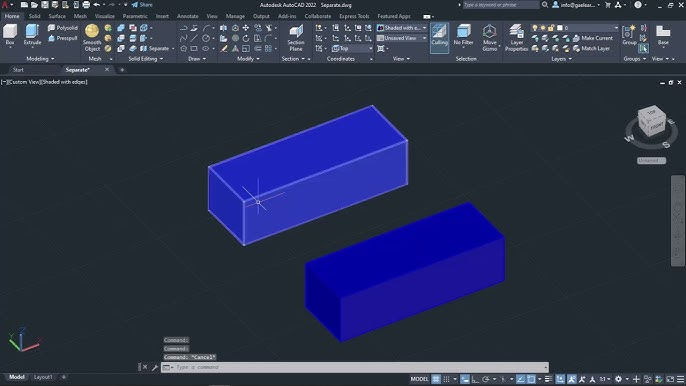

Hướng Dẫn Mô Hình 3D Với AutoCAD
AutoCAD không chỉ là công cụ thiết kế 2D mạnh mẽ mà còn cung cấp các tính năng toàn diện để tạo và chỉnh sửa các mô hình 3D phức tạp. Trong khóa học này, bạn sẽ học cách sử dụng AutoCAD để tạo ra các mô hình 3D chuyên nghiệp.
Mô hình 3D với AutoCAD được ứng dụng rộng rãi trong các ngành công nghiệp như kiến trúc, cơ khí, sản xuất, và thiết kế sản phẩm. Kỹ năng mô hình hóa 3D sẽ giúp bạn thể hiện ý tưởng thiết kế một cách trực quan và chính xác hơn.
Không Gian Làm Việc 3D
Để bắt đầu với mô hình 3D trong AutoCAD, bạn cần làm quen với không gian làm việc 3D và hiểu cách điều hướng trong môi trường này.
Cài đặt Viewports
Viewports (khung nhìn) cho phép bạn xem mô hình từ nhiều góc độ khác nhau cùng một lúc, giúp việc thiết kế 3D trở nên dễ dàng hơn.
Cách cài đặt viewport:
1. Chuyển sang không gian mô hình (Model Space)
2. Nhập lệnh VPORTS hoặc -VP
3. Chọn cấu hình viewport mong muốn (ví dụ: 3, 4)
Mẹo: Cấu hình "Three: Right" rất hữu ích cho thiết kế 3D vì nó hiển thị ba góc nhìn chính: mặt trên, mặt trước và góc nhìn đồng nhất (isometric).
Điều Hướng Trong Không Gian 3D
Điều hướng trong không gian 3D đòi hỏi các kỹ thuật khác so với không gian 2D. Bạn cần biết cách xoay, di chuyển và phóng to/thu nhỏ trong các hướng khác nhau.
Các phím tắt hữu ích:
- 3DORBIT (hoặc nhấn giữ phím Shift + chuột giữa): Xoay góc nhìn
- 3DPAN (hoặc nhấn giữ phím Shift + Ctrl + chuột giữa): Di chuyển góc nhìn
- 3DZOOM (hoặc cuộn chuột): Phóng to/thu nhỏ
Các Đối Tượng 3D Cơ Bản
AutoCAD cung cấp nhiều công cụ để tạo ra các đối tượng 3D cơ bản, được gọi là "khối nguyên thủy" (primitives).
Hộp (Box)
Lệnh Box cho phép bạn tạo ra một khối hộp chữ nhật 3D bằng cách xác định các góc đối diện và chiều cao.
Cách sử dụng:
1. Nhập lệnh BOX vào dòng lệnh hoặc chọn từ menu 3D Modeling
2. Xác định góc đầu tiên của đáy hộp
3. Xác định góc đối diện của đáy hộp
4. Nhập chiều cao của hộp hoặc chỉ định bằng chuột

Hình Trụ (Cylinder)
Lệnh Cylinder cho phép bạn tạo ra một hình trụ 3D bằng cách xác định đường tròn đáy và chiều cao.
Cách sử dụng:
1. Nhập lệnh CYLINDER vào dòng lệnh
2. Xác định tâm của đáy hình trụ
3. Xác định bán kính hoặc đường kính của đáy
4. Xác định chiều cao của hình trụ
Hình Cầu (Sphere)
Lệnh Sphere cho phép bạn tạo ra một hình cầu 3D bằng cách xác định tâm và bán kính.
Cách sử dụng:
1. Nhập lệnh SPHERE vào dòng lệnh
2. Xác định tâm của hình cầu
3. Xác định bán kính hoặc đường kính của hình cầu
Hình Nón (Cone)
Lệnh Cone cho phép bạn tạo ra một hình nón 3D bằng cách xác định đáy tròn và đỉnh.
Cách sử dụng:
1. Nhập lệnh CONE vào dòng lệnh
2. Xác định tâm của đáy hình nón
3. Xác định bán kính hoặc đường kính của đáy
4. Xác định chiều cao hoặc vị trí đỉnh của hình nón
Hình Nêm (Wedge)
Lệnh Wedge cho phép bạn tạo ra một hình nêm 3D, tương tự như một hình hộp được cắt theo đường chéo.
Cách sử dụng:
1. Nhập lệnh WEDGE vào dòng lệnh
2. Xác định góc đầu tiên của đáy hình nêm
3. Xác định góc đối diện của đáy hình nêm
4. Xác định chiều cao của hình nêm
Hình Xuyến (Torus)
Lệnh Torus cho phép bạn tạo ra một hình xuyến 3D (hình dạng như một chiếc bánh donut) bằng cách xác định bán kính vòng tròn lớn và bán kính ống.
Cách sử dụng:
1. Nhập lệnh TORUS vào dòng lệnh
2. Xác định tâm của hình xuyến
3. Xác định bán kính của vòng tròn lớn (từ tâm đến tâm ống)
4. Xác định bán kính của ống (bán kính mặt cắt)
Tạo Mô Hình Phức Tạp
Ngoài các khối cơ bản, AutoCAD còn cung cấp nhiều lệnh mạnh mẽ để tạo ra các mô hình 3D phức tạp hơn.
Lệnh Extrude
Lệnh Extrude cho phép bạn kéo dài một đối tượng 2D thành một đối tượng 3D theo một chiều cao hoặc đường dẫn xác định.
Cách sử dụng:
1. Vẽ một đối tượng 2D đóng kín (như hình tròn, đa giác, v.v.)
2. Nhập lệnh EXTRUDE
3. Chọn đối tượng cần kéo dài
4. Xác định chiều cao hoặc chọn đường dẫn để kéo dài theo
Mẹo: Bạn có thể sử dụng tùy chọn "Taper angle" để tạo ra hiệu ứng côn khi kéo dài.
Lệnh Revolve
Lệnh Revolve cho phép bạn xoay một đối tượng 2D quanh một trục để tạo thành một đối tượng 3D.
Cách sử dụng:
1. Vẽ một đối tượng 2D (profile) và một đường thẳng làm trục xoay
2. Nhập lệnh REVOLVE
3. Chọn đối tượng cần xoay
4. Xác định trục xoay (bằng cách chọn 2 điểm hoặc chọn một đối tượng có sẵn)
5. Xác định góc xoay (mặc định là 360 độ)
Lệnh Sweep
Lệnh Sweep cho phép bạn kéo dài một đối tượng 2D dọc theo một đường dẫn xác định để tạo thành một đối tượng 3D.
Cách sử dụng:
1. Vẽ một đối tượng 2D (profile) và một đường dẫn
2. Nhập lệnh SWEEP
3. Chọn đối tượng cần kéo dài
4. Chọn đường dẫn
Lệnh Loft
Lệnh Loft cho phép bạn tạo ra một đối tượng 3D bằng cách chuyển tiếp giữa hai hoặc nhiều mặt cắt 2D.
Cách sử dụng:
1. Vẽ các mặt cắt 2D tại các vị trí khác nhau trong không gian
2. Nhập lệnh LOFT
3. Chọn các mặt cắt theo thứ tự từ dưới lên trên
4. Nhấn Enter và điều chỉnh các tùy chọn nếu cần
Phép Toán Boolean
Các phép toán Boolean cho phép bạn kết hợp hoặc chỉnh sửa các đối tượng 3D hiện có để tạo ra các hình dạng mới phức tạp hơn.
Lệnh Union
Lệnh Union cho phép bạn kết hợp hai hoặc nhiều đối tượng 3D thành một đối tượng duy nhất.
Cách sử dụng:
1. Nhập lệnh UNION
2. Chọn các đối tượng cần kết hợp
3. Nhấn Enter để hoàn thành
Lệnh Subtract
Lệnh Subtract cho phép bạn trừ một hoặc nhiều đối tượng 3D từ một đối tượng khác.
Cách sử dụng:
1. Nhập lệnh SUBTRACT
2. Chọn đối tượng cần giữ lại (đối tượng bị trừ từ)
3. Nhấn Enter
4. Chọn đối tượng cần trừ đi
5. Nhấn Enter để hoàn thành
Lệnh Intersect
Lệnh Intersect cho phép bạn tạo ra một đối tượng mới từ phần giao nhau của hai hoặc nhiều đối tượng 3D.
Cách sử dụng:
1. Nhập lệnh INTERSECT
2. Chọn tất cả các đối tượng cần lấy phần giao
3. Nhấn Enter để hoàn thành
Vật Liệu và Ánh Sáng
Để làm cho mô hình 3D của bạn trông thực tế hơn, AutoCAD cho phép bạn áp dụng các vật liệu và thêm ánh sáng vào cảnh.
Cách áp dụng vật liệu:
1. Nhập lệnh MATERIALS hoặc MATBROWSEROPEN để mở Materials Browser
2. Chọn một vật liệu từ thư viện
3. Kéo và thả vật liệu lên đối tượng hoặc sử dụng lệnh MATERIALATTACH
4. Điều chỉnh các thuộc tính của vật liệu nếu cần
Cách thêm ánh sáng:
1. Nhập lệnh LIGHT
2. Chọn loại ánh sáng (điểm sáng, ánh sáng định hướng, ánh sáng chiếu sáng)
3. Xác định vị trí và hướng của nguồn sáng
4. Điều chỉnh cường độ và màu sắc của ánh sáng
Kết Xuất Hình Ảnh
Sau khi hoàn thành mô hình 3D và áp dụng vật liệu cũng như ánh sáng, bạn có thể kết xuất (render) để tạo ra hình ảnh chất lượng cao.
Cách kết xuất hình ảnh:
1. Nhập lệnh RENDER
2. Điều chỉnh các cài đặt kết xuất trong hộp thoại Render
3. Chọn kích thước đầu ra và độ phân giải
4. Nhấn nút Render để bắt đầu quá trình kết xuất
5. Lưu hình ảnh kết xuất khi hoàn tất
Dự Án Thực Hành
Thực hành là cách tốt nhất để nâng cao kỹ năng mô hình hóa 3D của bạn. Dưới đây là một số dự án thực hành để áp dụng những kiến thức đã học.
Dự Án 1: Thiết Kế Sản Phẩm
Trong dự án này, bạn sẽ tạo một mô hình 3D của một sản phẩm đơn giản, như một chiếc cốc, chai nước, hoặc một dụng cụ nhỏ.
Các bước thực hiện:
1. Tạo phác thảo 2D của mặt cắt sản phẩm
2. Sử dụng lệnh Revolve hoặc Extrude để tạo hình dạng cơ bản
3. Thêm các chi tiết bằng cách sử dụng các lệnh Boolean
4. Áp dụng vật liệu và thiết lập ánh sáng
5. Kết xuất hình ảnh cuối cùng
Dự Án 2: Mô Hình Kiến Trúc
Trong dự án này, bạn sẽ tạo một mô hình 3D đơn giản của một công trình kiến trúc, như một ngôi nhà nhỏ hoặc một tòa nhà văn phòng.
Các bước thực hiện:
1. Tạo mặt bằng 2D của công trình
2. Sử dụng lệnh Extrude để tạo tường và các kết cấu chính
3. Thêm mái, cửa sổ, cửa ra vào và các chi tiết khác
4. Tạo địa hình xung quanh nếu cần
5. Áp dụng vật liệu và thiết lập ánh sáng
6. Kết xuất hình ảnh hoặc tạo các góc nhìn khác nhau của công trình